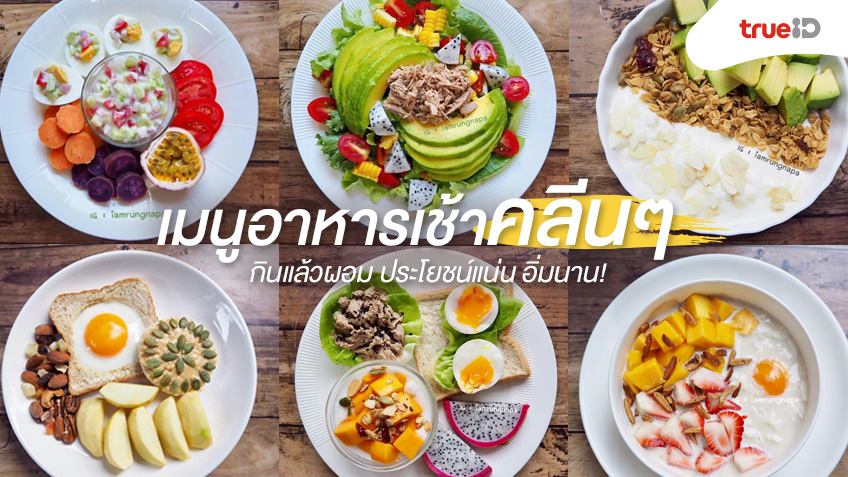

|

|
- ลดการแปรรูป: เลือกอาหารที่ผ่านกระบวนการแปรรูปน้อยที่สุด เช่น ข้าวกล้อง ข้าวซ้อมมือ แทนข้าวขาว, กินผลไม้สดแทนผลไม้กระป๋องหรือน้ำผลไม้สำเร็จรูป
- เน้นวัตถุดิบจากธรรมชาติ: กินผัก ผลไม้ ธัญพืชไม่ขัดสี และโปรตีนจากเนื้อสัตว์ไม่ติดมัน เช่น อกไก่ ปลา และไข่
- ปรุงรสให้น้อย: ลดการใช้น้ำตาล เกลือ และไขมันที่ไม่ดีต่อสุขภาพ
- เลือกไขมันดี: ใช้น้ำมันมะกอก หรือน้ำมันรำข้าวในการปรุงอาหาร และรับประทานถั่วเปลือกแข็งหรืออะโวคาโด
- ดื่มน้ำเปล่าให้เพียงพอ: การดื่มน้ำเปล่าช่วยให้ระบบต่างๆ ในร่างกายทำงานได้ดีขึ้น
- ช่วยควบคุมน้ำหนัก: อาหารคลีนส่วนใหญ่มีแคลอรี่ต่ำและมีใยอาหารสูง ทำให้อิ่มนาน
- ลดความเสี่ยงของโรค: ช่วยลดความเสี่ยงของโรคไม่ติดต่อเรื้อรัง เช่น โรคเบาหวาน, โรคหัวใจ, และความดันโลหิตสูง
- ดีต่อระบบย่อยอาหาร: ใยอาหารจากผักและผลไม้ช่วยให้ระบบขับถ่ายทำงานได้ดีขึ้น
- บำรุงผิวพรรณ: วิตามินและแร่ธาตุที่ได้รับจากอาหารธรรมชาติช่วยบำรุงผิวให้ดูสดใส
|